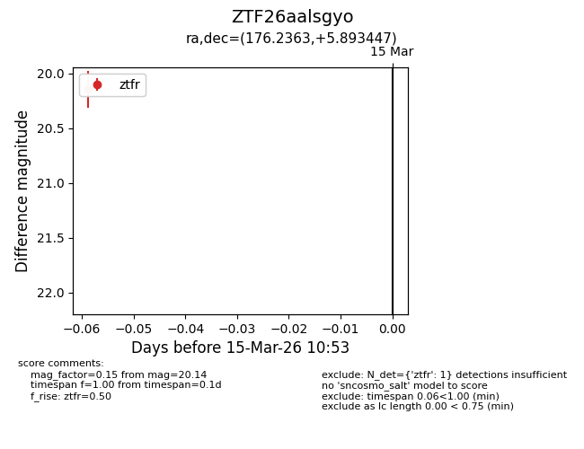
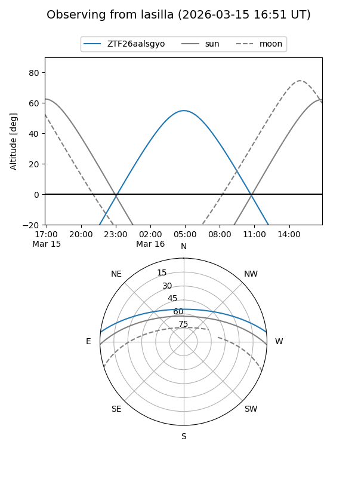
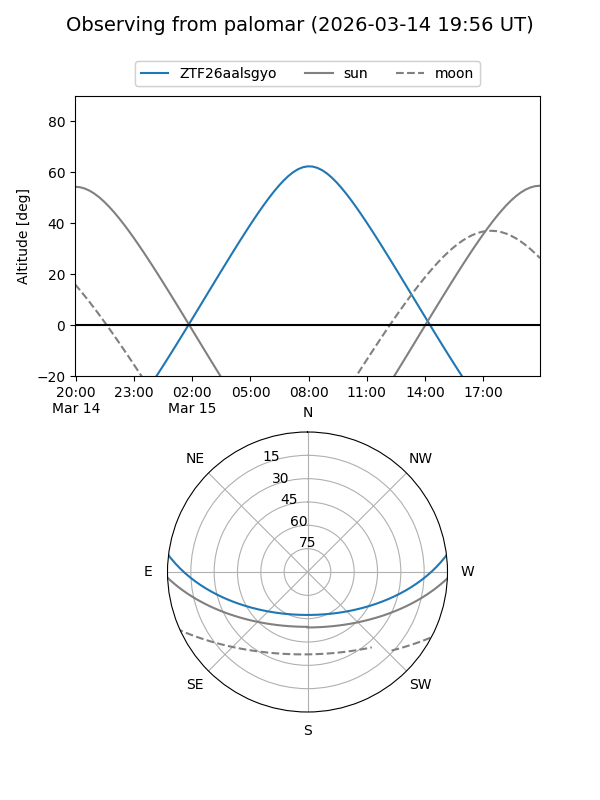

ZTF26aalsgyo
Target ZTF26aalsgyo at 2026-03-15 10:55
Aliases and brokers:
FINK: link
Lasair: link
ALeRCE: link
alt names
ZTF26aalsgyo (ztf,fink_ztf)
Coordinates:
equatorial (ra, dec) = 176.2363,+5.89345
equatorial (HMS+DMS) = 11:44:56.71,+05:53:36.41
galactic (l, b) = (263.2709,+63.52193)
Flags:
Photometry:
last ztfr=20.14
1 ztfr detections
Lightcurve

Visibility


Additional plots